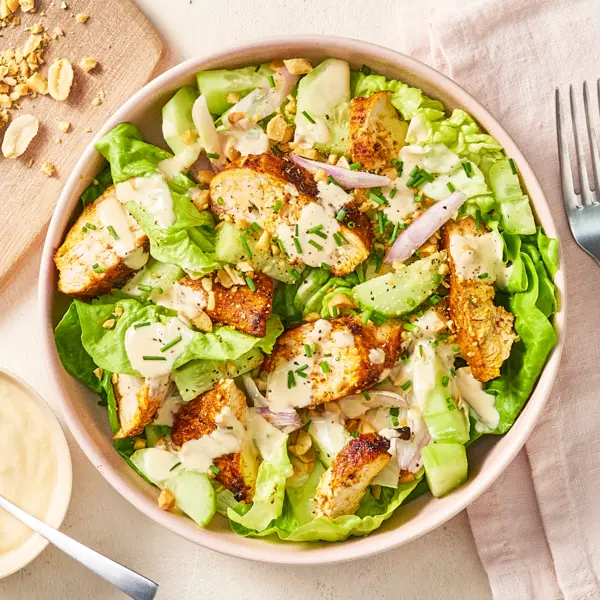
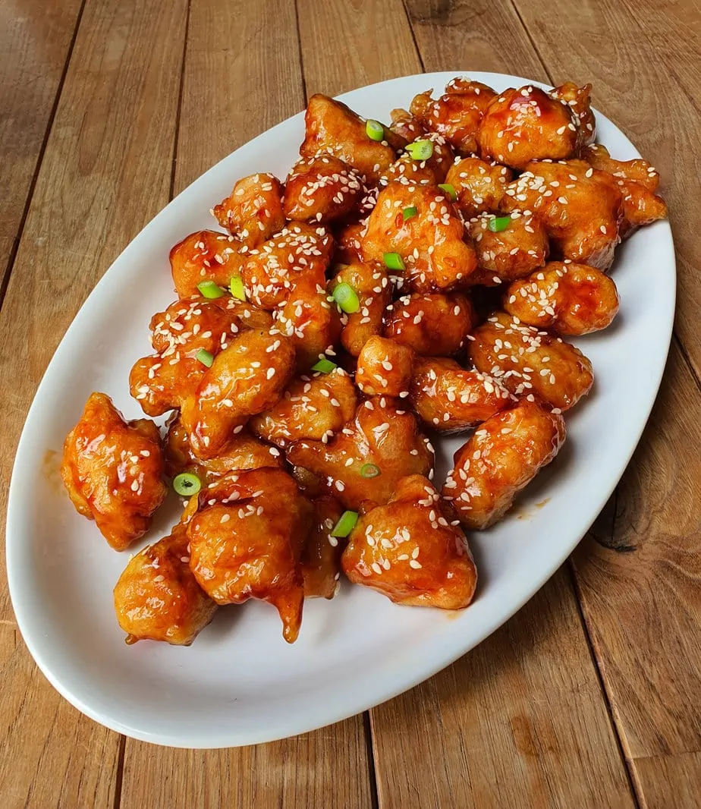
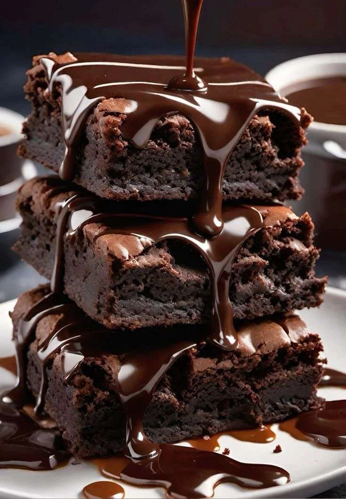

Poutine maison classique
La poutine qu'on aime: : frites croustillantes, fromage en grains qui couine et sauce brune maison.
4 portions
40 min
Facile
Voir la recette
Parcourez nos idées repas et desserts. Chaque carte vous indique le temps, la portion et la difficulté.
La poutine qu'on aime: : frites croustillantes, fromage en grains qui couine et sauce brune maison.

Laitue croquante, croutons et une vinaigre crémeuse.Parfaite en accompagnement

version rapide et accessible du classique sucré-salé

Texture mouelleuse et gouut intense de cacao
Texte d'exemple.